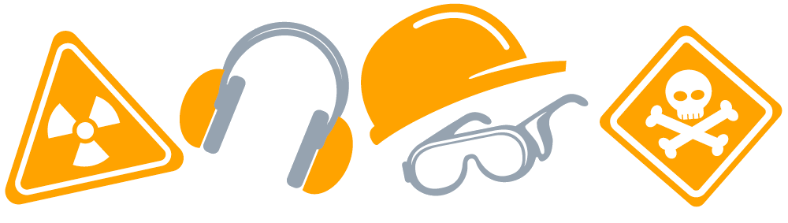
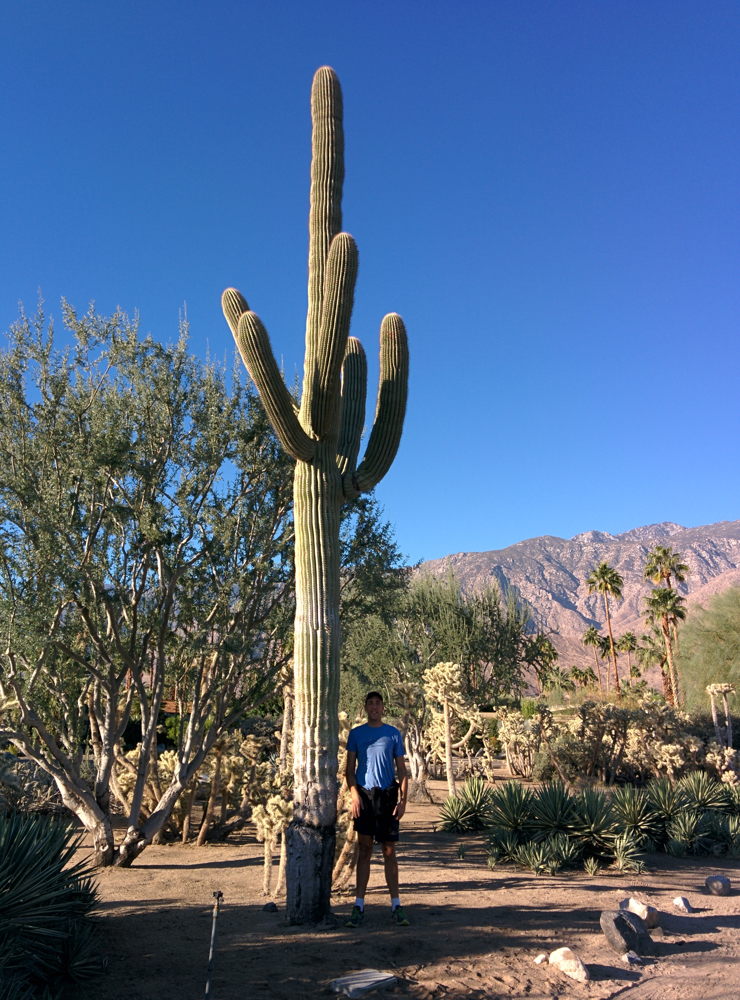

Safety
Lullabot 2014 Retreat
Dave Reid
Palm Springs Safety
Snakes
Scorpions
Spiders
Foxes
Dehydration
Pool

Cacti

Prickly pear cactus (Opuntia)
Cactus Plugging
http://www.urbandictionary.com/define.php?term=cactus+plugging
Palm Springs Aerial Tramway
Earthquakes
Retirees

Other Safety
Eaton-itis
http://www.urbandictionary.com/define.php?term=eatonitis
To prevent Eatonitis, do not engage Jeff in any of the following topics of conversation:
Content Strategy, Role-Playing Games, Feminism, Larry Garfield, Drupal, or /.*/
Security
Do you enable a Firmware password?
Are you using a VPN (Lullabot VPN, TunnelBear) when traveling?
Unlocked phone, tablet, or laptop?